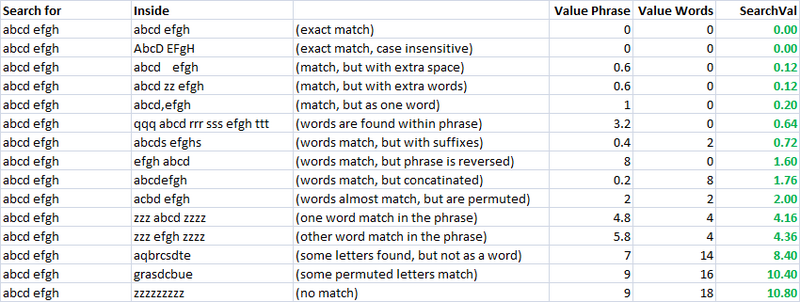
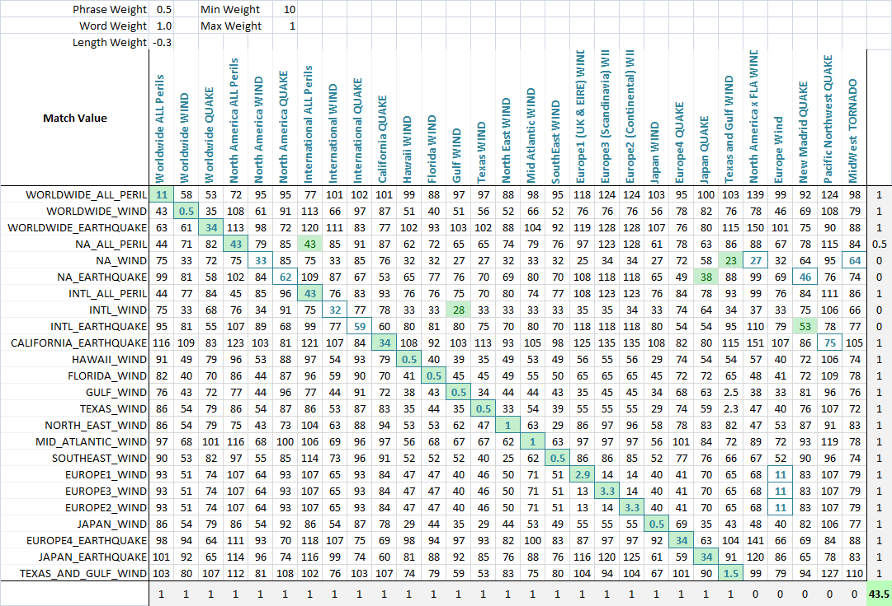

Getting the closest string match
I need a way to compare multiple strings to a test string and return the string that closely resembles it:
TEST STRING: THE BROWN FOX JUMPED OVER THE RED COW CHOICE A : THE RED COW JUMPED OVER THE GREEN CHICKEN CHOICE B : THE RED COW JUMPED OVER THE RED COW CHOICE C : THE RED FOX JUMPED OVER THE BROWN COW
(If I did this correctly) The closest string to the "TEST STRING" should be "CHOICE C". What is the easiest way to do this?
I plan on implementing this into multiple languages including VB.net, Lua, and JavaScript. At this point, pseudo code is acceptable. If you can provide an example for a specific language, this is appreciated too!
Answer
I was presented with this problem about a year ago when it came to looking up user entered information about a oil rig in a database of miscellaneous information. The goal was to do some sort of fuzzy string search that could identify the database entry with the most common elements.
Part of the research involved implementing the Levenshtein distance algorithm, which determines how many changes must be made to a string or phrase to turn it into another string or phrase.
The implementation I came up with was relatively simple, and involved a weighted comparison of the length of the two phrases, the number of changes between each phrase, and whether each word could be found in the target entry.
The article is on a private site so I'll do my best to append the relevant contents here:
Fuzzy String Matching is the process of performing a human-like estimation of the similarity of two words or phrases. In many cases, it involves identifying words or phrases which are most similar to each other. This article describes an in-house solution to the fuzzy string matching problem and its usefulness in solving a variety of problems which can allow us to automate tasks which previously required tedious user involvement.
Introduction
The need to do fuzzy string matching originally came about while developing the Gulf of Mexico Validator tool. What existed was a database of known gulf of Mexico oil rigs and platforms, and people buying insurance would give us some badly typed out information about their assets and we had to match it to the database of known platforms. When there was very little information given, the best we could do is rely on an underwriter to "recognize" the one they were referring to and call up the proper information. This is where this automated solution comes in handy.
I spent a day researching methods of fuzzy string matching, and eventually stumbled upon the very useful Levenshtein distance algorithm on Wikipedia.
Implementation
After reading about the theory behind it, I implemented and found ways to optimize it. This is how my code looks like in VBA:
'Calculate the Levenshtein Distance between two strings (the number of insertions, 'deletions, and substitutions needed to transform the first string into the second) Public Function LevenshteinDistance(ByRef S1 As String, ByVal S2 As String) As Long Dim L1 As Long, L2 As Long, D() As Long 'Length of input strings and distance matrix Dim i As Long, j As Long, cost As Long 'loop counters and cost of substitution for current letter Dim cI As Long, cD As Long, cS As Long 'cost of next Insertion, Deletion and Substitution L1 = Len(S1): L2 = Len(S2) ReDim D(0 To L1, 0 To L2) For i = 0 To L1: D(i, 0) = i: Next i For j = 0 To L2: D(0, j) = j: Next j For j = 1 To L2 For i = 1 To L1 cost = Abs(StrComp(Mid$(S1, i, 1), Mid$(S2, j, 1), vbTextCompare)) cI = D(i - 1, j) + 1 cD = D(i, j - 1) + 1 cS = D(i - 1, j - 1) + cost If cI <= cD Then 'Insertion or Substitution If cI <= cS Then D(i, j) = cI Else D(i, j) = cS Else 'Deletion or Substitution If cD <= cS Then D(i, j) = cD Else D(i, j) = cS End If Next i Next j LevenshteinDistance = D(L1, L2) End Function
Simple, speedy, and a very useful metric. Using this, I created two separate metrics for evaluating the similarity of two strings. One I call "valuePhrase" and one I call "valueWords". valuePhrase is just the Levenshtein distance between the two phrases, and valueWords splits the string into individual words, based on delimiters such as spaces, dashes, and anything else you'd like, and compares each word to each other word, summing up the shortest Levenshtein distance connecting any two words. Essentially, it measures whether the information in one 'phrase' is really contained in another, just as a word-wise permutation. I spent a few days as a side project coming up with the most efficient way possible of splitting a string based on delimiters.
valueWords, valuePhrase, and Split function:
Public Function valuePhrase#(ByRef S1$, ByRef S2$) valuePhrase = LevenshteinDistance(S1, S2) End Function Public Function valueWords#(ByRef S1$, ByRef S2$) Dim wordsS1$(), wordsS2$() wordsS1 = SplitMultiDelims(S1, " _-") wordsS2 = SplitMultiDelims(S2, " _-") Dim word1%, word2%, thisD#, wordbest# Dim wordsTotal# For word1 = LBound(wordsS1) To UBound(wordsS1) wordbest = Len(S2) For word2 = LBound(wordsS2) To UBound(wordsS2) thisD = LevenshteinDistance(wordsS1(word1), wordsS2(word2)) If thisD < wordbest Then wordbest = thisD If thisD = 0 Then GoTo foundbest Next word2 foundbest: wordsTotal = wordsTotal + wordbest Next word1 valueWords = wordsTotal End Function '''''''''''''''''''''''''''''''''''''''''''''''''''''''''''''''''''''''''''''' ' SplitMultiDelims ' This function splits Text into an array of substrings, each substring ' delimited by any character in DelimChars. Only a single character ' may be a delimiter between two substrings, but DelimChars may ' contain any number of delimiter characters. It returns a single element ' array containing all of text if DelimChars is empty, or a 1 or greater ' element array if the Text is successfully split into substrings. ' If IgnoreConsecutiveDelimiters is true, empty array elements will not occur. ' If Limit greater than 0, the function will only split Text into 'Limit' ' array elements or less. The last element will contain the rest of Text. '''''''''''''''''''''''''''''''''''''''''''''''''''''''''''''''''''''''''''''' Function SplitMultiDelims(ByRef Text As String, ByRef DelimChars As String, _ Optional ByVal IgnoreConsecutiveDelimiters As Boolean = False, _ Optional ByVal Limit As Long = -1) As String() Dim ElemStart As Long, N As Long, M As Long, Elements As Long Dim lDelims As Long, lText As Long Dim Arr() As String lText = Len(Text) lDelims = Len(DelimChars) If lDelims = 0 Or lText = 0 Or Limit = 1 Then ReDim Arr(0 To 0) Arr(0) = Text SplitMultiDelims = Arr Exit Function End If ReDim Arr(0 To IIf(Limit = -1, lText - 1, Limit)) Elements = 0: ElemStart = 1 For N = 1 To lText If InStr(DelimChars, Mid(Text, N, 1)) Then Arr(Elements) = Mid(Text, ElemStart, N - ElemStart) If IgnoreConsecutiveDelimiters Then If Len(Arr(Elements)) > 0 Then Elements = Elements + 1 Else Elements = Elements + 1 End If ElemStart = N + 1 If Elements + 1 = Limit Then Exit For End If Next N 'Get the last token terminated by the end of the string into the array If ElemStart <= lText Then Arr(Elements) = Mid(Text, ElemStart) 'Since the end of string counts as the terminating delimiter, if the last character 'was also a delimiter, we treat the two as consecutive, and so ignore the last elemnent If IgnoreConsecutiveDelimiters Then If Len(Arr(Elements)) = 0 Then Elements = Elements - 1 ReDim Preserve Arr(0 To Elements) 'Chop off unused array elements SplitMultiDelims = Arr End Function
Measures of Similarity
Using these two metrics, and a third which simply computes the distance between two strings, I have a series of variables which I can run an optimization algorithm to achieve the greatest number of matches. Fuzzy string matching is, itself, a fuzzy science, and so by creating linearly independent metrics for measuring string similarity, and having a known set of strings we wish to match to each other, we can find the parameters that, for our specific styles of strings, give the best fuzzy match results.
Initially, the goal of the metric was to have a low search value for for an exact match, and increasing search values for increasingly permuted measures. In an impractical case, this was fairly easy to define using a set of well defined permutations, and engineering the final formula such that they had increasing search values results as desired.

In the above screenshot, I tweaked my heuristic to come up with something that
I felt scaled nicely to my perceived difference between the search term and
result. The heuristic I used for Value Phrase in the above spreadsheet was
=valuePhrase(A2,B2)-0.8*ABS(LEN(B2)-LEN(A2)). I was effectively reducing the
penalty of the Levenstein distance by 80% of the difference in the length of
the two "phrases". This way, "phrases" that have the same length suffer the
full penalty, but "phrases" which contain 'additional information' (longer)
but aside from that still mostly share the same characters suffer a reduced
penalty. I used the Value Words function as is, and then my final
SearchVal heuristic was defined as =MIN(D2,E2)*0.8+MAX(D2,E2)*0.2 - a
weighted average. Whichever of the two scores was lower got weighted 80%, and
20% of the higher score. This was just a heuristic that suited my use case to
get a good match rate. These weights are something that one could then tweak
to get the best match rate with their test data.
As you can see, the last two metrics, which are fuzzy string matching metrics, already have a natural tendency to give low scores to strings that are meant to match (down the diagonal). This is very good.
Application To allow the optimization of fuzzy matching, I weight each metric. As such, every application of fuzzy string match can weight the parameters differently. The formula that defines the final score is a simply combination of the metrics and their weights:
value = Min(phraseWeight*phraseValue, wordsWeight*wordsValue)*minWeight
+ Max(phraseWeight*phraseValue, wordsWeight*wordsValue)*maxWeight
+ lengthWeight*lengthValue
Using an optimization algorithm (neural network is best here because it is a discrete, multi-dimentional problem), the goal is now to maximize the number of matches. I created a function that detects the number of correct matches of each set to each other, as can be seen in this final screenshot. A column or row gets a point if the lowest score is assigned the the string that was meant to be matched, and partial points are given if there is a tie for the lowest score, and the correct match is among the tied matched strings. I then optimized it. You can see that a green cell is the column that best matches the current row, and a blue square around the cell is the row that best matches the current column. The score in the bottom corner is roughly the number of successful matches and this is what we tell our optimization problem to maximize.

The algorithm was a wonderful success, and the solution parameters say a lot about this type of problem. You'll notice the optimized score was 44, and the best possible score is 48. The 5 columns at the end are decoys, and do not have any match at all to the row values. The more decoys there are, the harder it will naturally be to find the best match.
In this particular matching case, the length of the strings are irrelevant, because we are expecting abbreviations that represent longer words, so the optimal weight for length is -0.3, which means we do not penalize strings which vary in length. We reduce the score in anticipation of these abbreviations, giving more room for partial word matches to supersede non-word matches that simply require less substitutions because the string is shorter.
The word weight is 1.0 while the phrase weight is only 0.5, which means that we penalize whole words missing from one string and value more the entire phrase being intact. This is useful because a lot of these strings have one word in common (the peril) where what really matters is whether or not the combination (region and peril) are maintained.
Finally, the min weight is optimized at 10 and the max weight at 1. What this means is that if the best of the two scores (value phrase and value words) isn't very good, the match is greatly penalized, but we don't greatly penalize the worst of the two scores. Essentially, this puts emphasis on requiring either the valueWord or valuePhrase to have a good score, but not both. A sort of "take what we can get" mentality.
It's really fascinating what the optimized value of these 5 weights say about the sort of fuzzy string matching taking place. For completely different practical cases of fuzzy string matching, these parameters are very different. I've used it for 3 separate applications so far.
While unused in the final optimization, a benchmarking sheet was established which matches columns to themselves for all perfect results down the diagonal, and lets the user change parameters to control the rate at which scores diverge from 0, and note innate similarities between search phrases (which could in theory be used to offset false positives in the results)
Further Applications
This solution has potential to be used anywhere where the user wishes to have a computer system identify a string in a set of strings where there is no perfect match. (Like an approximate match vlookup for strings).
So what you should take from this, is that you probably want to use a combination of high level heuristics (finding words from one phrase in the other phrase, length of both phrases, etc) along with the implementation of the Levenshtein distance algorithm. Because deciding which is the "best" match is a heuristic (fuzzy) determination - you'll have to come up with a set of weights for any metrics you come up with to determine similarity.
With the appropriate set of heuristics and weights, you'll have your comparison program quickly making the decisions that you would have made.
Suggest
This problem turns up all the time in bioinformatics. The accepted answer above (which was great by the way) is known in bioinformatics as the Needleman-Wunsch (compare two strings) and Smith-Waterman (find an approximate substring in a longer string) algorithms. They work great and have been workhorses for decades.
But what if you have a million strings to compare? That's a trillion pairwise comparisons, each of which is O(n*m)! Modern DNA sequencers easily generate a billion short DNA sequences, each about 200 DNA "letters" long. Typically, we want to find, for each such string, the best match against the human genome (3 billion letters). Clearly, the Needleman-Wunsch algorithm and its relatives will not do.
This so-called "alignment problem" is a field of active research. The most popular algorithms are currently able to find inexact matches between 1 billion short strings and the human genome in a matter of hours on reasonable hardware (say, eight cores and 32 GB RAM).
Most of these algorithms work by quickly finding short exact matches (seeds) and then extending these to the full string using a slower algorithm (for example, the Smith-Waterman). The reason this works is that we are really only interested in a few close matches, so it pays off to get rid of the 99.9...% of pairs that have nothing in common.
How does finding exact matches help finding inexact matches? Well, say we allow only a single difference between the query and the target. It is easy to see that this difference must occur in either the right or left half of the query, and so the other half must match exactly. This idea can be extended to multiple mismatches and is the basis for the ELAND algorithm commonly used with Illumina DNA sequencers.
There are many very good algorithms for doing exact string matching. Given a
query string of length 200, and a target string of length 3 billion (the human
genome), we want to find any place in the target where there is a substring of
length k that matches a substring of the query exactly. A simple approach is
to begin by indexing the target: take all k-long substrings, put them in an
array and sort them. Then take each k-long substring of the query and search
the sorted index. Sort and search can be done in O(log n) time.
But storage can be a problem. An index of the 3 billion letter target would need to hold 3 billion pointers and 3 billion k-long words. It would seem hard to fit this in less than several tens of gigabytes of RAM. But amazingly we can greatly compress the index, using the Burrows-Wheeler transform, and it will still be efficiently queryable. An index of the human genome can fit in less than 4 GB RAM. This idea is the basis of popular sequence aligners such as Bowtie and BWA.
Alternatively, we can use a suffix array, which stores only the pointers, yet represents a simultaneous index of all suffixes in the target string (essentially, a simultaneous index for all possible values of k; the same is true of the Burrows-Wheeler transform). A suffix array index of the human genome will take 12 GB of RAM if we use 32-bit pointers.
The links above contain a wealth of information and links to primary research papers. The ELAND link goes to a PDF with useful figures illustrating the concepts involved, and shows how to deal with insertions and deletions.
Finally, while these algorithms have basically solved the problem of (re)sequencing single human genomes (a billion short strings), DNA sequencing technology improves even faster than Moore's law, and we are fast approaching trillion-letter datasets. For example, there are currently projects underway to sequence the genomes of 10,000 vertebrate species, each a billion letters long or so. Naturally, we will want to do pairwise inexact string matching on the data...